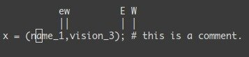
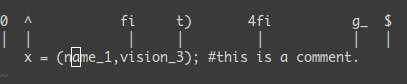
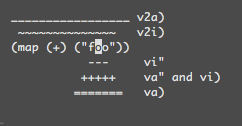
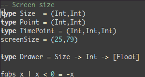
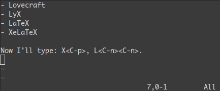
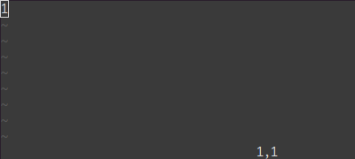
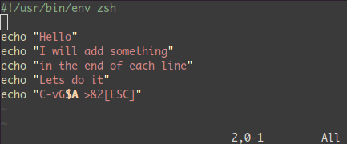
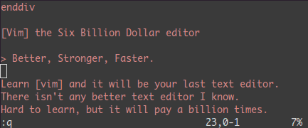

Learn Vim Progressively

tl;dr: You want to teach yourself vim (the best text editor known to human kind) in the fastest way possible. This is my way of doing it. You start by learning the minimal to survive, then you integrate all the tricks slowly.
Vim the Six Billion Dollar editor
Better, Stronger, Faster.
Learn vim and it will be your last text editor. There isn’t any better text editor that I know of. It is hard to learn, but incredible to use.
I suggest you teach yourself Vim in 4 steps:
- Survive
- Feel comfortable
- Feel Better, Stronger, Faster
- Use superpowers of vim
By the end of this journey, you’ll become a vim superstar.
But before we start, just a warning. Learning vim will be painful at first. It will take time. It will be a lot like playing a musical instrument. Don’t expect to be more efficient with vim than with another editor in less than 3 days. In fact it will certainly take 2 weeks instead of 3 days.
1st Level – Survive
- Install vim
- Launch vim
- DO NOTHING! Read.
In a standard editor, typing on the keyboard is enough to write something and see it on the screen. Not this time. Vim is in Normal mode. Let’s go to Insert mode. Type the letter i.
You should feel a bit better. You can type letters like in a standard editor. To get back to Normal mode just press the ESC key.
You now know how to switch between Insert and Normal mode. And now, here are the commands that you need in order to survive in Normal mode:
i→ Insert mode. TypeESCto return to Normal mode.x→ Delete the char under the cursor:wq→ Save and Quit (:wsave,:qquit)dd→ Delete (and copy) the current linep→ PasteRecommended:
hjkl(highly recommended but not mandatory) → basic cursor move (←↓↑→). Hint:jlooks like a down arrow.:help <command>→ Show help about<command>. You can use:helpwithout a<command>to get general help.
Only 5 commands. That is all you need to get started. Once these command start to become natural (maybe after a day or so), you should move on to level 2.
But first, just a little remark about Normal mode. In standard editors, to copy you have to use the Ctrl key (Ctrl-c generally). In fact, when you press Ctrl, it is as if all of your keys change meaning. Using vim in normal mode is a bit like having the editor automatically press the Ctrl key for you.
A last word about notations:
- instead of writing
Ctrl-λ, I’ll write<C-λ>. - commands starting with
:end with<enter>. For example, when I write:q, I mean:q<enter>.
2nd Level – Feel comfortable
You know the commands required for survival. It’s time to learn a few more commands. These are my suggestions:
Insert mode variations:
a→ insert after the cursoro→ insert a new line after the current oneO→ insert a new line before the current onecw→ replace from the cursor to the end of the word
Basic moves
0→ go to the first column^→ go to the first non-blank character of the line$→ go to the end of lineg_→ go to the last non-blank character of line/pattern→ search forpattern
Copy/Paste
P→ paste before, rememberpis paste after current position.yy→ copy the current line, easier but equivalent toddP
Undo/Redo
u→ undo<C-r>→ redo
Load/Save/Quit/Change File (Buffer)
:e <path/to/file>→ open:w→ save:saveas <path/to/file>→ save to<path/to/file>:x,ZZor:wq→ save and quit (:xonly save if necessary):q!→ quit without saving, also::qa!to quit even if there are modified hidden buffers.:bn(resp.:bp) → show next (resp. previous) file (buffer)
Take the time to learn all of these command. Once done, you should be able to do every thing you are able to do in other editors. You may still feel a bit awkward. But follow me to the next level and you’ll see why vim is worth the extra work.
3rd Level – Better. Stronger. Faster.
Congratulation for reaching this far! Now we can start with the interesting stuff. At level 3, we’ll only talk about commands which are compatible with the old vi editor.
Better
Let’s look at how vim could help you to repeat yourself:
.→ (dot) will repeat the last command,- N<command> → will repeat the command N times.
Some examples, open a file and type:
2dd→ will delete 2 lines3p→ will paste the text 3 times100idesu [ESC]→ will write “desu desu desu desu desu desu desu desu desu desu desu desu desu desu desu desu desu desu desu desu desu desu desu desu desu desu desu desu desu desu desu desu desu desu desu desu desu desu desu desu desu desu desu desu desu desu desu desu desu desu desu desu desu desu desu desu desu desu desu desu desu desu desu desu desu desu desu desu desu desu desu desu desu desu desu desu desu desu desu desu desu desu desu desu desu desu desu desu desu desu desu desu desu desu desu desu desu desu desu desu”.→ Just after the last command will write again the 100 “desu”.3.→ Will write 3 “desu” (and not 300, how clever).
Stronger
Knowing how to move efficiently with vim is very important. Don’t skip this section.
- N
G→ Go to line N gg→ shortcut for1G- go to the start of the fileG→ Go to last lineWord moves:
w→ go to the start of the following word,e→ go to the end of this word.
By default, words are composed of letters and the underscore character. Let’s call a WORD a group of letter separated by blank characters. If you want to consider WORDS, then just use uppercase characters:
W→ go to the start of the following WORD,E→ go to the end of this WORD.

Now let’s talk about very efficient moves:
%: Go to the corresponding(,{,[.*(resp.#) : go to next (resp. previous) occurrence of the word under the cursor
Believe me, the last three commands are gold.
Faster
Remember about the importance of vi moves? Here is the reason. Most commands can be used using the following general format:
<start position><command><end position>
For example : 0y$ means
0→ go to the beginning of this liney→ yank from here$→ up to the end of this line
We also can do things like ye, yank from here to the end of the word. But also y2/foo yank up to the second occurrence of “foo”.
But what was true for y (yank), is also true for d (delete), v (visual select), gU (uppercase), gu (lowercase), etc…
4th Level – Vim Superpowers
With all preceding commands you should be comfortable using vim. But now, here are the killer features. Some of these features were the reason I started to use vim.
Move on current line: 0 ^ $ g_ f F t T , ;
0→ go to column 0^→ go to first character on the line$→ go to the last columng_→ go to the last character on the linefa→ go to next occurrence of the letteraon the line.,(resp.;) will find the next (resp. previous) occurrence.t,→ go to just before the character,.3fa→ find the 3rd occurrence ofaon this line.FandT→ likefandtbut backward. 
A useful tip is: dt" → remove everything until the ".
Zone selection <action>a<object> or <action>i<object>
These command can only be used after an operator in visual mode. But they are very powerful. Their main pattern is:
<action>a<object> and <action>i<object>
Where action can be any action, for example, d (delete), y (yank), v (select in visual mode). The object can be: w a word, W a WORD (extended word), s a sentence, p a paragraph. But also, natural character such as ", ', ), }, ].
Suppose the cursor is on the first o of (map (+) ("foo")).
vi"→ will selectfoo.va"→ will select"foo".vi)→ will select"foo".va)→ will select("foo").v2i)→ will selectmap (+) ("foo")v2a)→ will select(map (+) ("foo"))

Select rectangular blocks: <C-v>.
Rectangular blocks are very useful for commenting many lines of code. Typically: 0<C-v><C-d>I-- [ESC]
^→ go to the first non-blank character of the line<C-v>→ Start block selection<C-d>→ move down (could also bejjjor%, etc…)I-- [ESC]→ write--to comment each line

Note: in Windows you might have to use <C-q> instead of <C-v> if your clipboard is not empty.
Completion: <C-n> and <C-p>.
In Insert mode, just type the start of a word, then type <C-p>, magic… 
Macros : qa do something q, @a, @@
qa record your actions in the register a. Then @a will replay the macro saved into the register a as if you typed it. @@ is a shortcut to replay the last executed macro.
Example
On a line containing only the number 1, type this:
qaYp<C-a>q→qastart recording.Ypduplicate this line.<C-a>increment the number.
qstop recording.@a→ write 2 under the 1@@→ write 3 under the 2Now do
100@@will create a list of increasing numbers until 103.

Visual selection: v,V,<C-v>
We saw an example with <C-v>. There is also v and V. Once the selection has been made, you can:
J→ join all the lines together.<(resp.>) → indent to the left (resp. to the right).=→ auto indent

Add something at the end of all visually selected lines:
<C-v>- go to desired line (
jjjor<C-d>or/patternor%etc…) $go to the end of the lineA, write text,ESC.

Splits: :split and vsplit.
These are the most important commands, but you should look at :help split.
:split→ create a split (:vsplitcreate a vertical split)<C-w><dir>: where dir is any ofhjklor ←↓↑→ to change the split.<C-w>_(resp.<C-w>|) : maximise the size of the split (resp. vertical split)<C-w>+(resp.<C-w>-) : Grow (resp. shrink) split

Conclusion
That was 90% of the commands I use every day. I suggest that you learn no more than one or two new commands per day. After two to three weeks you’ll start to feel the power of vim in your hands.
Learning Vim is more a matter of training than plain memorization. Fortunately vim comes with some very good tools and excellent documentation. Run vimtutor until you are familiar with most basic commands. Also, you should read this page carefully: :help usr_02.txt.
Then, you will learn about !, folds, registers, plugins and many other features. Learn vim like you’d learn piano and all should be fine.